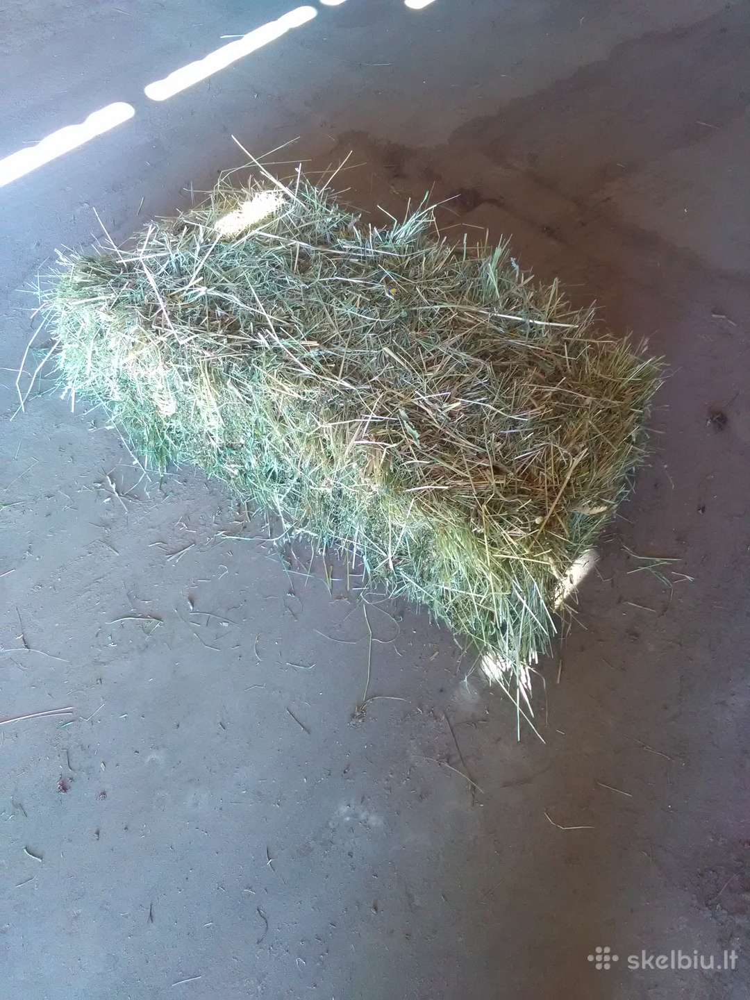

Orai Šienas - tiksli ir išsami oro prognozė Šienas šiandien, rytoj ir savaitę. Šienas, Telemarkas, Norvegija
 Orų prognozė Šienas mieste Nustatymai Lietuvių Afrikaans Azərbaycanca Bahasa Indonesia Dansk Deutsch Eesti English Español Filipino Française Hrvatski Italiano Latviešu Magyar Melayu Nederlands Norsk bokmål Oʻzbekcha Polski Português Română Shqip Slovenčina Slovenščina Suomi Svenska Tiếng Việt Türkçe Čeština Ελληνικά Беларуская Български Кыргызча Македонски Монгол Русский Српски Тоҷикӣ Українська Қазақша Հայերեն עברית اردو العربية فارسی मराठी हिन्दी বাংলা ગુજરાતી தமிழ் తెలుగు ಕನ್ನಡ മലയാളം සිංහල ไทย ქართული 中國 日本語 한국어 Norvegija Telemarkas ŠienasOrų prognozė Šienas mieste
Tikslus laikas Šienas:
1 0 : 1 1 Vietinis laikas. Laiko zona: GMT 1 žiemą * oras, nurodytas vietiniu laikuOrai ir meteo sąlygos Ketvirtadienis 29 Spalis Šienas
Orai ir meteo sąlygos Penktadienis 30 Spalis Šienas
Orai ir meteo sąlygos Šeštadienis 31 Spalis Šienas
Orai ir meteo sąlygos Sekmadienis 01 Lapkritis Šienas
Orai ir meteo sąlygos Pirmadienis 02 Lapkritis Šienas
Orai ir meteo sąlygos Antradienis 03 Lapkritis Šienas
Orai ir meteo sąlygos Trečiadienis 04 Lapkritis Šienas
Orai ir meteo sąlygos Ketvirtadienis 05 Lapkritis Šienas
Orai ir meteo sąlygos Penktadienis 06 Lapkritis Šienas
Orai ir meteo sąlygos Šeštadienis 07 Lapkritis Šienas
Orai ir meteo sąlygos Sekmadienis 08 Lapkritis Šienas
Ketvirtadienis, Spalis 29, 2020
Saulė: Saulėtekis 07:34 , Saulėlydis 16:36 . Mėnulis: Mėnulio patekėjimas 16:41 , Mėnulio nusileidimas 04:25 , Mėnulio fazė: Augantis mėnulis Geomagnetinis laukas: rami Ultravioletinės spinduliuotės indeksas: 0,6 (Žemas) UV indeksas skaityti nuo 0 iki 2 reiškia, mažas pavojus iš saulės UV spindulius, skirtasvidutinis asmuo.Dėvėti akinius nuo saulės, ant šviesių dienų.Jei dega lengvai, sudaryti ir naudoti plataus spektro SPF 30+ apsaugos nuo saulės.Ryškus paviršius, tokius kaip smėlis, vanduo ir sniegas, bus padidinti UV spinduliuotės poveikį.ryte 10:00 iki 12:00 +6 ... +8 °C Debesuota su pragiedruliais Vėjas: lengvas , pietvakarių , greitis 2 m/sek Sąlygos sausumoje: Vėjas juntamas nepridengtu odos paviršiumi. Jūrinės sąlygos: Raibuliai su keteromis. Keteros lygios, nėra lūžimo
Vėjo gūsius: 4 m/sek
Santykinė drėgmė: 89-97%
Debesuota: 93%
Atmosferos slėgis: 995-999 hPa
dieną 12:01 iki 18:00 +8 ... +9 °C Debesuota su pragiedruliais Vėjas: lengvas , vakarų , greitis 1-3 m/sek
Vėjo gūsius: 5 m/sek
Santykinė drėgmė: 82-90%
Debesuota: 22%
Atmosferos slėgis: 999-1001 hPa
vakare 18:01 iki 00:00 +5 ... +8 °C Debesuota su pragiedruliais Vėjas: lengvas , šiaurės vakarų , greitis 1-2 m/sek
Vėjo gūsius: 3 m/sek
Santykinė drėgmė: 93-97%
Debesuota: 46%
Atmosferos slėgis: 1001-1004 hPa
Ketvirtadienis, Spalis 29, 2020 mieste Šienas oras bus toks: ryte oro temperatūra bus +6...+8°C; per šaltas: šaltas, rasos taškas: +5,93°C; temperatūros, vėjo greičio ir drėgmės santykis: Šiek tiek sausas; rūko tikimybė, matomumas 560 m ; kritulių nesitikima, lengvas vėjas bus smūgis iš pietvakarių su greitis 2 m/sek , danguje, kartais yra nedideli debesys; rekomenduojami drabužiai: batai , sportbačiai , vilnos skrybėlę , kojinės , kojinės , pėdkelnės , kelnės , šiltos kelnės , šiltos kelnės , marškiniai ilgomis rankovėmis , palaidinė su ilgomis rankovėmis , džemperis , megztos suknelės , striukė , sezono kailis , vilnos striukė ; astronominis sezonas: ruduo; po pietų oro temperatūra pakyla iki +8...+9°C; per šaltas: šaltas, rasos taškas: +6,76°C; temperatūros, vėjo greičio ir drėgmės santykis: Šiek tiek sausas; kritulių nesitikima, lengvas vėjas bus smūgis iš vakarų su greitis 1-3 m/sek , danguje, kartais yra nedideli debesys; drabužiai sezonui: batai , sportbačiai , kojinės , kojinės , pėdkelnės , kelnės , šiltos kelnės , marškiniai ilgomis rankovėmis , palaidinė su ilgomis rankovėmis , džemperis , megztos suknelės , striukė ; astronominis sezonas: ruduo; vakare oro temperatūra nukrenta iki +5...+8°C; per šaltas: šaltas, rasos taškas: +6,24°C; temperatūros, vėjo greičio ir drėgmės santykis: Šiek tiek sausas; rūko tikimybė, matomumas 600 m ; kritulių nesitikima, lengvas vėjas bus smūgis iš šiaurės vakarų su greitis 1-2 m/sek , danguje, kartais yra nedideli debesys; ką dėvėti: batai , sportbačiai , vilnos skrybėlę , kojinės , kojinės , pėdkelnės , kelnės , šiltos kelnės , šiltos kelnės , marškiniai ilgomis rankovėmis , palaidinė su ilgomis rankovėmis , džemperis , megztos suknelės , striukė , sezono kailis , vilnos striukė ; astronominis sezonas: ruduo; dienos trukmė yra 09:02
Penktadienis, Spalis 30, 2020
Saulė: Saulėtekis 07:36 , Saulėlydis 16:33 . Mėnulis: Mėnulio patekėjimas 16:47 , Mėnulio nusileidimas 05:41 , Mėnulio fazė: Augantis mėnulis Geomagnetinis laukas: rami Ultravioletinės spinduliuotės indeksas: 0,4 (Žemas)naktį 00:01 iki 06:00 +3 ... +5 °C Debesuota Vėjas: lengvas , šiaurės vakarų , greitis 1-2 m/sek
Vėjo gūsius: 3 m/sek
Santykinė drėgmė: 98-99%
Debesuota: 79%
Atmosferos slėgis: 1004-1007 hPa
ryte 06:01 iki 12:00 +3 ... +6 °C Labai debesuota Vėjas: lengvas , šiaurės , greitis 2 m/sek
Vėjo gūsius: 3 m/sek
Santykinė drėgmė: 88-100%
Debesuota: 97%
Atmosferos slėgis: 1005-1008 hPa
dieną 12:01 iki 18:00 +6 ... +7 °C Iš dalies lietus Vėjas: lengvas , šiaurės rytų , greitis 1-2 m/sek
Vėjo gūsius: 5 m/sek
Santykinė drėgmė: 88-95%
Debesuota: 100%
Atmosferos slėgis: 1007-1008 hPa
Atmosferos krituliai: 2,1 mm
vakare 18:01 iki 00:00 +6 ... +8 °C Iš dalies lietus Vėjas: lengvas , šiaurės , greitis 1-3 m/sek
Vėjo gūsius: 6 m/sek
Santykinė drėgmė: 94-95%
Debesuota: 100%
Atmosferos slėgis: 1007-1008 hPa
Atmosferos krituliai: 2,3 mm
Penktadienis, Spalis 30, 2020 mieste Šienas oras bus toks: naktį oro temperatūra nukrenta iki +3...+5°C; per šaltas: šaltas, rasos taškas: +3,85°C; temperatūros, vėjo greičio ir drėgmės santykis: Šiek tiek sausas; rūko tikimybė, matomumas 580 m ; kritulių nesitikima, lengvas vėjas bus smūgis iš šiaurės vakarų su greitis 1-2 m/sek , debesuota; rekomenduojami drabužiai: batai , lengvi jojimo batai , vilnos skrybėlę , kojinės , kojinės , pėdkelnės , šiltos kelnės , šiltos kelnės , marškiniai ilgomis rankovėmis , megztos suknelės , striukė , sezono kailis , vilnos striukė ; astronominis sezonas: ruduo; ryte oro temperatūra pakyla iki +3...+6°C; per šaltas: šaltas, rasos taškas: +4,1°C; temperatūros, vėjo greičio ir drėgmės santykis: Šiek tiek sausas; rūko tikimybė, matomumas 520 m ; negali kritulių, lengvas vėjas bus smūgis iš šiaurės su greitis 2 m/sek , debesuota; drabužiai sezonui: batai , sportbačiai , lengvi jojimo batai , vilnos skrybėlę , kojinės , kojinės , pėdkelnės , šiltos kelnės , šiltos kelnės , marškiniai ilgomis rankovėmis , palaidinė su ilgomis rankovėmis , džemperis , megztos suknelės , striukė , sezono kailis , vilnos striukė ; astronominis sezonas: ruduo; po pietų oro temperatūra pakyla iki +6...+7°C; per šaltas: šaltas, rasos taškas: +5,77°C; temperatūros, vėjo greičio ir drėgmės santykis: Šiek tiek sausas; kai kuriose vietose bus šiek tiek lietaus , rekomenduojama naudoti skėtis, lengvas vėjas bus smūgis iš šiaurės rytų su greitis 1-2 m/sek , debesuota; ką dėvėti: batai , sportbačiai , vilnos skrybėlę , kojinės , kojinės , pėdkelnės , kelnės , šiltos kelnės , šiltos kelnės , marškiniai ilgomis rankovėmis , palaidinė su ilgomis rankovėmis , džemperis , megztos suknelės , striukė , sezono kailis , vilnos striukė ; astronominis sezonas: ruduo; vakare oro temperatūra bus +6...+8°C; per šaltas: šaltas, rasos taškas: +6,24°C; temperatūros, vėjo greičio ir drėgmės santykis: Šiek tiek sausas; rūko tikimybė, matomumas 560 m ; kai kuriose vietose bus šiek tiek lietaus , rekomenduojama naudoti skėtis, lengvas vėjas bus smūgis iš šiaurės su greitis 1-3 m/sek , debesuota; rekomenduojami drabužiai: batai , sportbačiai , vilnos skrybėlę , kojinės , kojinės , pėdkelnės , kelnės , šiltos kelnės , šiltos kelnės , marškiniai ilgomis rankovėmis , palaidinė su ilgomis rankovėmis , džemperis , megztos suknelės , striukė , sezono kailis , vilnos striukė ; astronominis sezonas: ruduo; dienos trukmė yra 08:57
Šeštadienis, Spalis 31, 2020
Saulė: Saulėtekis 07:39 , Saulėlydis 16:31 . Mėnulis: Mėnulio patekėjimas 16:54 , Mėnulio nusileidimas 06:58 , Mėnulio fazė: Pilnatis Geomagnetinis laukas: rami Ultravioletinės spinduliuotės indeksas: 0,3 (Žemas)naktį 00:01 iki 06:00 +8 °C Iš dalies lietus Vėjas: lengvas , vakarų , greitis 1-3 m/sek
Vėjo gūsius: 7 m/sek
Santykinė drėgmė: 94-97%
Debesuota: 100%
Atmosferos slėgis: 1008-1011 hPa
Atmosferos krituliai: 0,2 mm
ryte 06:01 iki 12:00 +6 ... +9 °C Debesuota su pragiedruliais Vėjas: lengvas oras , šiaurės vakarų , greitis 1 m/sek Sąlygos sausumoje: Vėjo judėjimas pastebimas dūmuose Jūrinės sąlygos: Raibuliavimas be keterų
Vėjo gūsius: 4 m/sek
Santykinė drėgmė: 81-95%
Debesuota: 100%
Atmosferos slėgis: 1011-1013 hPa
dieną 12:01 iki 18:00 +9 ... +10 °C Iš dalies lietus Vėjas: lengvas , šiaurės vakarų , greitis 2-3 m/sek
Vėjo gūsius: 8 m/sek
Santykinė drėgmė: 78-91%
Debesuota: 100%
Atmosferos slėgis: 1012-1013 hPa
Atmosferos krituliai: 0,4 mm
vakare 18:01 iki 00:00 +9 ... +10 °C Iš dalies lietus Vėjas: gaivus , rytų , greitis 5-8 m/sek Sąlygos sausumoje: Maži medžiai siūbuoja. Jūrinės sąlygos: Vidutinės (1,2 m) bangos. Susidaro putos ir purslai
Vėjo gūsius: 14 m/sek
Santykinė drėgmė: 93-97%
Debesuota: 100%
Atmosferos slėgis: 1005-1012 hPa
Atmosferos krituliai: 0,7 mm
Šeštadienis, Spalis 31, 2020 mieste Šienas oras bus toks: naktį oro temperatūra pakyla iki +8°C; per šaltas: šaltas, rasos taškas: +7,39°C; temperatūros, vėjo greičio ir drėgmės santykis: Šiek tiek sausas; kai kuriose vietose bus šiek tiek lietaus , rekomenduojama naudoti skėtis, lengvas vėjas bus smūgis iš vakarų su greitis 1-3 m/sek , debesuota; drabužiai sezonui: batai , sportbačiai , kojinės , kojinės , pėdkelnės , kelnės , šiltos kelnės , marškiniai ilgomis rankovėmis , palaidinė su ilgomis rankovėmis , džemperis , megztos suknelės , striukė ; astronominis sezonas: ruduo; ryte oro temperatūra bus +6...+9°C, rasos taškas: +6,11°C; temperatūros, vėjo greičio ir drėgmės santykis: Šiek tiek sausas; rūko tikimybė, matomumas 580 m ; kritulių nesitikima, lengvas oras vėjas bus smūgis iš šiaurės vakarų su greitis 1 m/sek , danguje, kartais yra nedideli debesys; ką dėvėti: batai , sportbačiai , vilnos skrybėlę , kojinės , kojinės , pėdkelnės , kelnės , šiltos kelnės , šiltos kelnės , marškiniai ilgomis rankovėmis , palaidinė su ilgomis rankovėmis , džemperis , megztos suknelės , striukė , sezono kailis , vilnos striukė ; astronominis sezonas: ruduo; po pietų oro temperatūra pakyla iki +9...+10°C, rasos taškas: +7,57°C; temperatūros, vėjo greičio ir drėgmės santykis: Šiek tiek sausas; kai kuriose vietose bus šiek tiek lietaus , rekomenduojama naudoti skėtis, lengvas vėjas bus smūgis iš šiaurės vakarų su greitis 2-3 m/sek , debesuota; rekomenduojami drabužiai: batai , sportbačiai , kojinės , kojinės , pėdkelnės , kelnės , šiltos kelnės , marškiniai ilgomis rankovėmis , palaidinė su ilgomis rankovėmis , džemperis , megztos suknelės , striukė ; astronominis sezonas: ruduo; vakare oro temperatūra bus +9...+10°C, rasos taškas: +9,23°C; temperatūros, vėjo greičio ir drėgmės santykis: Šiek tiek sausas; kai kuriose vietose bus šiek tiek lietaus , rekomenduojama naudoti skėtis, gaivus vėjas bus smūgis iš rytų su greitis 5-8 m/sek , debesuota; drabužiai sezonui: batai , sportbačiai , kojinės , kojinės , pėdkelnės , kelnės , šiltos kelnės , marškiniai ilgomis rankovėmis , palaidinė su ilgomis rankovėmis , džemperis , megztos suknelės , striukė ; astronominis sezonas: ruduo; dienos trukmė yra 08:52
Sekmadienis, Lapkritis 1, 2020
Saulė: Saulėtekis 07:41 , Saulėlydis 16:28 . Mėnulis: Mėnulio patekėjimas 17:03 , Mėnulio nusileidimas 08:17 , Mėnulio fazė: Mažėjantis mėnulis Geomagnetinis laukas: nestabilus Ultravioletinės spinduliuotės indeksas: 0,1 (Žemas)naktį 00:01 iki 06:00 +11 °C Lietus Vėjas: gaivus , pietų , greitis 6-9 m/sek
Vėjo gūsius: 16 m/sek
Santykinė drėgmė: 95-96%
Debesuota: 100%
Atmosferos slėgis: 996-1004 hPa
Atmosferos krituliai: 7,3 mm
ryte 06:01 iki 12:00 +9 ... +11 °C Lietus Vėjas: švelnus , pietų , greitis 3-5 m/sek Sąlygos sausumoje: Lapai ir mažos šakelės nuolatos juda Jūrinės sąlygos: Dideli raibuliai. Keteros pradeda lūžti, padrikos pabalusios viršūnės.
Vėjo gūsius: 15 m/sek
Santykinė drėgmė: 81-95%
Debesuota: 100%
Atmosferos slėgis: 996-997 hPa
Atmosferos krituliai: 5,5 mm
dieną 12:01 iki 18:00 +9 ... +12 °C Lietus Vėjas: stiprus , pietų , greitis 4-11 m/sek Sąlygos sausumoje: Juda didelės šakos. Girdimas laidų švilpimas. Naudoti skėtį darosi sunku. Jūrinės sąlygos: Didelės bangos su putotomis keteromis ir purslais
Vėjo gūsius: 22 m/sek
Santykinė drėgmė: 71-81%
Debesuota: 100%
Atmosferos slėgis: 997-1000 hPa
Atmosferos krituliai: 6,8 mm
vakare 18:01 iki 00:00 +10 ... +12 °C Iš dalies lietus Vėjas: gaivus , pietų , greitis 5-10 m/sek
Vėjo gūsius: 18 m/sek
Santykinė drėgmė: 83-92%
Debesuota: 100%
Atmosferos slėgis: 996-1001 hPa
Atmosferos krituliai: 2 mm
Sekmadienis, Lapkritis 1, 2020 mieste Šienas oras bus toks: naktį oro temperatūra pakyla iki +11°C, rasos taškas: +10,38°C; temperatūros, vėjo greičio ir drėgmės santykis: Šiek tiek sausas; tikimasi lietaus , rekomenduojama naudoti skėtis, gaivus vėjas bus smūgis iš pietų su greitis 6-9 m/sek , debesuota; ką dėvėti: batai , sportbačiai , kojinės , kojinės , pėdkelnės , kelnės , šiltos kelnės , marškiniai ilgomis rankovėmis , palaidinė su ilgomis rankovėmis , džemperis , megztos suknelės , striukė ; astronominis sezonas: ruduo; ryte oro temperatūra nukrenta iki +9...+11°C, rasos taškas: +8,08°C; temperatūros, vėjo greičio ir drėgmės santykis: Šiek tiek sausas; tikimasi lietaus , rekomenduojama naudoti skėtis, švelnus vėjas bus smūgis iš pietų su greitis 3-5 m/sek , debesuota; rekomenduojami drabužiai: batai , sportbačiai , kojinės , kojinės , pėdkelnės , kelnės , šiltos kelnės , marškiniai ilgomis rankovėmis , palaidinė su ilgomis rankovėmis , džemperis , megztos suknelės , striukė ; astronominis sezonas: ruduo; po pietų oro temperatūra pakyla iki +9...+12°C, rasos taškas: +6,89°C; temperatūros, vėjo greičio ir drėgmės santykis: Šiek tiek sausas; tikimasi lietaus , rekomenduojama naudoti skėtis, stiprus vėjas bus smūgis iš pietų su greitis 4-11 m/sek , debesuota; drabužiai sezonui: batai , sportbačiai , kojinės , kojinės , pėdkelnės , kelnės , šiltos kelnės , marškiniai ilgomis rankovėmis , palaidinė su ilgomis rankovėmis , džemperis , megztos suknelės , striukė ; astronominis sezonas: ruduo; vakare oro temperatūra bus +10...+12°C, rasos taškas: +9,07°C; temperatūros, vėjo greičio ir drėgmės santykis: Šiek tiek sausas; kai kuriose vietose bus šiek tiek lietaus , rekomenduojama naudoti skėtis, gaivus vėjas bus smūgis iš pietų su greitis 5-10 m/sek , debesuota; ką dėvėti: batai , sportbačiai , kojinės , kojinės , pėdkelnės , kelnės , šiltos kelnės , marškiniai ilgomis rankovėmis , palaidinė su ilgomis rankovėmis , džemperis , megztos suknelės , striukė ; astronominis sezonas: ruduo; dienos trukmė yra 08:47
Pirmadienis, Lapkritis 2, 2020
Saulė: Saulėtekis 07:44 , Saulėlydis 16:26 . Mėnulis: Mėnulio patekėjimas 17:15 , Mėnulio nusileidimas 09:36 , Mėnulio fazė: Mažėjantis mėnulis Geomagnetinis laukas: nestabilus Ultravioletinės spinduliuotės indeksas: 0,4 (Žemas)naktį 00:01 iki 06:00 +8 ... +11 °C Iš dalies lietus Vėjas: vidutinis , pietų , greitis 5-7 m/sek Sąlygos sausumoje: Dulkės ir popierius pakeliami. Pradeda judėti mažos šakos Jūrinės sąlygos: Mažos bangos
Vėjo gūsius: 16 m/sek
Santykinė drėgmė: 93-99%
Debesuota: 100%
Atmosferos slėgis: 988-995 hPa
Atmosferos krituliai: 6,2 mm
ryte 06:01 iki 12:00 +11 ... +14 °C Lietus Vėjas: stiprus , pietvakarių , greitis 6-11 m/sek
Vėjo gūsius: 22 m/sek
Santykinė drėgmė: 71-94%
Debesuota: 100%
Atmosferos slėgis: 988-993 hPa
Atmosferos krituliai: 3 mm
dieną 12:01 iki 18:00 +11 ... +14 °C Iš dalies lietus Vėjas: gaivus , pietvakarių , greitis 5-10 m/sek
Vėjo gūsius: 18 m/sek
Santykinė drėgmė: 67-78%
Debesuota: 89%
Atmosferos slėgis: 993-996 hPa
Atmosferos krituliai: 0,2 mm
vakare 18:01 iki 00:00 +8 ... +11 °C Iš dalies lietus Vėjas: vidutinis , pietvakarių , greitis 5-6 m/sek
Vėjo gūsius: 13 m/sek
Santykinė drėgmė: 80-82%
Debesuota: 96%
Atmosferos slėgis: 997-1001 hPa
Atmosferos krituliai: 0,4 mm
Pirmadienis, Lapkritis 2, 2020 mieste Šienas oras bus toks: naktį oro temperatūra nukrenta iki +8...+11°C, rasos taškas: +9,38°C; temperatūros, vėjo greičio ir drėgmės santykis: Šiek tiek sausas; kai kuriose vietose bus šiek tiek lietaus , rekomenduojama naudoti skėtis, vidutinis vėjas bus smūgis iš pietų su greitis 5-7 m/sek , debesuota; rekomenduojami drabužiai: batai , sportbačiai , kojinės , kojinės , pėdkelnės , kelnės , šiltos kelnės , marškiniai ilgomis rankovėmis , palaidinė su ilgomis rankovėmis , džemperis , megztos suknelės , striukė ; astronominis sezonas: ruduo; ryte oro temperatūra pakyla iki +11...+14°C, rasos taškas: +10,15°C; temperatūros, vėjo greičio ir drėgmės santykis: Šiek tiek sausas; tikimasi lietaus , rekomenduojama naudoti skėtis, stiprus vėjas bus smūgis iš pietvakarių su greitis 6-11 m/sek , debesuota; drabužiai sezonui: batai , sportbačiai , kojinės , kojinės , pėdkelnės , kelnės , šiltos kelnės , marškiniai ilgomis rankovėmis , palaidinė su ilgomis rankovėmis , džemperis , megztos suknelės , striukė ; astronominis sezonas: ruduo; po pietų oro temperatūra bus +11...+14°C, rasos taškas: +8,23°C; temperatūros, vėjo greičio ir drėgmės santykis: Šiek tiek sausas; kai kuriose vietose bus šiek tiek lietaus , rekomenduojama naudoti skėtis, gaivus vėjas bus smūgis iš pietvakarių su greitis 5-10 m/sek , debesuota; ką dėvėti: batai , sportbačiai , kojinės , kojinės , pėdkelnės , kelnės , šiltos kelnės , marškiniai ilgomis rankovėmis , palaidinė su ilgomis rankovėmis , džemperis , megztos suknelės , striukė ; astronominis sezonas: ruduo; vakare oro temperatūra nukrenta iki +8...+11°C, rasos taškas: +6,85°C; temperatūros, vėjo greičio ir drėgmės santykis: Šiek tiek sausas; kai kuriose vietose bus šiek tiek lietaus , rekomenduojama naudoti skėtis, vidutinis vėjas bus smūgis iš pietvakarių su greitis 5-6 m/sek , debesuota; rekomenduojami drabužiai: batai , sportbačiai , kojinės , kojinės , pėdkelnės , kelnės , šiltos kelnės , marškiniai ilgomis rankovėmis , palaidinė su ilgomis rankovėmis , džemperis , megztos suknelės , striukė ; astronominis sezonas: ruduo; dienos trukmė yra 08:42
Antradienis, Lapkritis 3, 2020
Saulė: Saulėtekis 07:46 , Saulėlydis 16:23 . Mėnulis: Mėnulio patekėjimas 17:33 , Mėnulio nusileidimas 10:55 , Mėnulio fazė: Mažėjantis mėnulis Geomagnetinis laukas: raminaktį 00:01 iki 06:00 +6 ... +8 °C Debesuota su pragiedruliais Vėjas: švelnus , pietvakarių , greitis 4-5 m/sek
Vėjo gūsius: 13 m/sek
Santykinė drėgmė: 79-81%
Debesuota: 21%
Atmosferos slėgis: 1001-1007 hPa
ryte 06:01 iki 12:00 +6 ... +8 °C Dangus be debesų Vėjas: vidutinis , pietvakarių , greitis 4-6 m/sek
Vėjo gūsius: 14 m/sek
Santykinė drėgmė: 78-80%
Debesuota: 44%
Atmosferos slėgis: 1007-1011 hPa
dieną 12:01 iki 18:00 +8 ... +9 °C Labai debesuota Vėjas: vidutinis , pietų , greitis 5-7 m/sek
Vėjo gūsius: 13 m/sek
Santykinė drėgmė: 75-83%
Debesuota: 100%
Atmosferos slėgis: 1011-1012 hPa
vakare 18:01 iki 00:00 +6 ... +8 °C Lietus Vėjas: vidutinis , pietvakarių , greitis 4-6 m/sek
Vėjo gūsius: 13 m/sek
Santykinė drėgmė: 85-92%
Debesuota: 100%
Atmosferos slėgis: 1013 hPa
Atmosferos krituliai: 0,4 mm
Antradienis, Lapkritis 3, 2020 mieste Šienas oras bus toks: naktį oro temperatūra nukrenta iki +6...+8°C; per šaltas: šaltas, rasos taškas: +3,75°C; temperatūros, vėjo greičio ir drėgmės santykis: Šiek tiek sausas; kritulių nesitikima, švelnus vėjas bus smūgis iš pietvakarių su greitis 4-5 m/sek , danguje, kartais yra nedideli debesys; drabužiai sezonui: batai , sportbačiai , vilnos skrybėlę , kojinės , kojinės , pėdkelnės , kelnės , šiltos kelnės , šiltos kelnės , marškiniai ilgomis rankovėmis , palaidinė su ilgomis rankovėmis , džemperis , megztos suknelės , striukė , sezono kailis , vilnos striukė ; astronominis sezonas: ruduo; ryte oro temperatūra bus +6...+8°C; per šaltas: šaltas, rasos taškas: +3,57°C; temperatūros, vėjo greičio ir drėgmės santykis: Šiek tiek sausas; kritulių nesitikima, vidutinis vėjas bus smūgis iš pietvakarių su greitis 4-6 m/sek , švarus dangus; ką dėvėti: batai , sportbačiai , vilnos skrybėlę , kojinės , kojinės , pėdkelnės , kelnės , šiltos kelnės , šiltos kelnės , marškiniai ilgomis rankovėmis , palaidinė su ilgomis rankovėmis , džemperis , megztos suknelės , striukė , sezono kailis , vilnos striukė ; astronominis sezonas: ruduo; po pietų oro temperatūra pakyla iki +8...+9°C; per šaltas: šaltas, rasos taškas: +5,51°C; temperatūros, vėjo greičio ir drėgmės santykis: Šiek tiek sausas; negali kritulių, vidutinis vėjas bus smūgis iš pietų su greitis 5-7 m/sek , debesuota; rekomenduojami drabužiai: batai , sportbačiai , kojinės , kojinės , pėdkelnės , kelnės , šiltos kelnės , marškiniai ilgomis rankovėmis , palaidinė su ilgomis rankovėmis , džemperis , megztos suknelės , striukė ; astronominis sezonas: ruduo; vakare oro temperatūra nukrenta iki +6...+8°C; per šaltas: šaltas, rasos taškas: +5,29°C; temperatūros, vėjo greičio ir drėgmės santykis: Šiek tiek sausas; tikimasi lietaus , rekomenduojama naudoti skėtis, vidutinis vėjas bus smūgis iš pietvakarių su greitis 4-6 m/sek , debesuota; drabužiai sezonui: batai , sportbačiai , vilnos skrybėlę , kojinės , kojinės , pėdkelnės , kelnės , šiltos kelnės , šiltos kelnės , marškiniai ilgomis rankovėmis , palaidinė su ilgomis rankovėmis , džemperis , megztos suknelės , striukė , sezono kailis , vilnos striukė ; astronominis sezonas: ruduo; dienos trukmė yra 08:37
Trečiadienis, Lapkritis 4, 2020
Saulė: Saulėtekis 07:49 , Saulėlydis 16:21 . Mėnulis: Mėnulio patekėjimas 18:01 , Mėnulio nusileidimas 12:10 , Mėnulio fazė: Mažėjantis mėnulis Geomagnetinis laukas: raminaktį 00:01 iki 06:00 +3 ... +7 °C Lietus Vėjas: lengvas , šiaurės vakarų , greitis 1-3 m/sek
Vėjo gūsius: 5 m/sek
Santykinė drėgmė: 95-97%
Debesuota: 74%
Atmosferos slėgis: 1015-1019 hPa
Atmosferos krituliai: 0,8 mm
ryte 06:01 iki 12:00 +3 ... +5 °C Debesuota su pragiedruliais Vėjas: švelnus , šiaurės vakarų , greitis 2-4 m/sek
Vėjo gūsius: 10 m/sek
Santykinė drėgmė: 76-93%
Debesuota: 27%
Atmosferos slėgis: 1020-1024 hPa
dieną 12:01 iki 18:00 +5 ... +7 °C Dangus be debesų Vėjas: švelnus , vakarų , greitis 3-4 m/sek
Vėjo gūsius: 8 m/sek
Santykinė drėgmė: 67-76%
Debesuota: 33%
Atmosferos slėgis: 1025 hPa
vakare 18:01 iki 00:00 +4 ... +5 °C Labai debesuota Vėjas: lengvas , vakarų , greitis 3 m/sek
Vėjo gūsius: 6 m/sek
Santykinė drėgmė: 76-81%
Debesuota: 100%
Atmosferos slėgis: 1023-1025 hPa
Trečiadienis, Lapkritis 4, 2020 mieste Šienas oras bus toks: naktį oro temperatūra nukrenta iki +3...+7°C; per šaltas: šaltas, rasos taškas: +4,41°C; temperatūros, vėjo greičio ir drėgmės santykis: Šiek tiek sausas; tikimasi lietaus , rekomenduojama naudoti skėtis, lengvas vėjas bus smūgis iš šiaurės vakarų su greitis 1-3 m/sek , debesuota; ką dėvėti: batai , sportbačiai , lengvi jojimo batai , vilnos skrybėlę , kojinės , kojinės , pėdkelnės , kelnės , šiltos kelnės , šiltos kelnės , marškiniai ilgomis rankovėmis , palaidinė su ilgomis rankovėmis , džemperis , megztos suknelės , striukė , sezono kailis , vilnos striukė ; astronominis sezonas: ruduo; ryte oro temperatūra nukrenta iki +3...+5°C; per šaltas: šaltas, rasos taškas: +1,68°C; rūko tikimybė, matomumas 520 m ; kritulių nesitikima, švelnus vėjas bus smūgis iš šiaurės vakarų su greitis 2-4 m/sek , danguje, kartais yra nedideli debesys; rekomenduojami drabužiai: batai , lengvi jojimo batai , vilnos skrybėlę , kojinės , kojinės , pėdkelnės , šiltos kelnės , šiltos kelnės , marškiniai ilgomis rankovėmis , megztos suknelės , striukė , sezono kailis , vilnos striukė ; astronominis sezonas: ruduo; po pietų oro temperatūra pakyla iki +5...+7°C; per šaltas: šaltas, rasos taškas: +1,28°C; kritulių nesitikima, švelnus vėjas bus smūgis iš vakarų su greitis 3-4 m/sek , švarus dangus; drabužiai sezonui: batai , sportbačiai , vilnos skrybėlę , kojinės , kojinės , pėdkelnės , kelnės , šiltos kelnės , šiltos kelnės , marškiniai ilgomis rankovėmis , palaidinė su ilgomis rankovėmis , džemperis , megztos suknelės , striukė , sezono kailis , vilnos striukė ; astronominis sezonas: ruduo; vakare oro temperatūra nukrenta iki +4...+5°C; per šaltas: šaltas, rasos taškas: +1,62°C; negali kritulių, lengvas vėjas bus smūgis iš vakarų su greitis 3 m/sek , debesuota; ką dėvėti: batai , vilnos skrybėlę , kojinės , kojinės , pėdkelnės , šiltos kelnės , šiltos kelnės , marškiniai ilgomis rankovėmis , megztos suknelės , striukė , sezono kailis , vilnos striukė ; astronominis sezonas: ruduo; dienos trukmė yra 08:32
Ketvirtadienis, Lapkritis 5, 2020
Saulė: Saulėtekis 07:51 , Saulėlydis 16:18 . Mėnulis: Mėnulio patekėjimas 18:43 , Mėnulio nusileidimas 13:14 , Mėnulio fazė: Mažėjantis mėnulis Geomagnetinis laukas: raminaktį 00:01 iki 06:00 +1 ... +5 °C Dangus be debesų Vėjas: lengvas , vakarų , greitis 1-2 m/sek
Vėjo gūsius: 4 m/sek
Santykinė drėgmė: 70-86%
Debesuota: 84%
Atmosferos slėgis: 1021-1033 hPa
ryte 06:01 iki 12:00 +1 ... +4 °C Debesuota su pragiedruliais Vėjas: lengvas oras , vakarų , greitis 1 m/sek
Vėjo gūsius: 2 m/sek
Santykinė drėgmė: 71-81%
Debesuota: 55%
Atmosferos slėgis: 1033-1035 hPa
dieną 12:01 iki 18:00 +3 ... +6 °C Debesuota su pragiedruliais Vėjas: lengvas , pietvakarių , greitis 1-2 m/sek
Vėjo gūsius: 5 m/sek
Santykinė drėgmė: 66-79%
Debesuota: 37%
Atmosferos slėgis: 1032-1033 hPa
vakare 18:01 iki 00:00 +1 ... +2 °C Dangus be debesų Vėjas: lengvas oras , vakarų , greitis 1 m/sek
Vėjo gūsius: 3 m/sek
Santykinė drėgmė: 79-84%
Debesuota: 0%
Atmosferos slėgis: 1029-1032 hPa
Ketvirtadienis, Lapkritis 5, 2020 mieste Šienas oras bus toks: naktį oro temperatūra nukrenta iki +1...+5°C; per šaltas: šaltas, rasos taškas: -0,51°C; kritulių nesitikima, lengvas vėjas bus smūgis iš vakarų su greitis 1-2 m/sek , švarus dangus; rekomenduojami drabužiai: batai , lengvi jojimo batai , vilnos skrybėlę , kojinės , kojinės , pėdkelnės , šiltos kelnės , šiltos kelnės , marškiniai ilgomis rankovėmis , megztos suknelės , striukė , sezono kailis , vilnos striukė ; astronominis sezonas: ruduo; ryte oro temperatūra bus +1...+4°C, rasos taškas: -0,87°C; kritulių nesitikima, lengvas oras vėjas bus smūgis iš vakarų su greitis 1 m/sek , danguje, kartais yra nedideli debesys; drabužiai sezonui: batai , lengvi jojimo batai , vilnos skrybėlę , kojinės , kojinės , pėdkelnės , šiltos kelnės , šiltos kelnės , marškiniai ilgomis rankovėmis , megztos suknelės , striukė , sezono kailis , vilnos striukė ; astronominis sezonas: ruduo; po pietų oro temperatūra pakyla iki +3...+6°C; per šaltas: šaltas, rasos taškas: +0,51°C; kritulių nesitikima, lengvas vėjas bus smūgis iš pietvakarių su greitis 1-2 m/sek , danguje, kartais yra nedideli debesys; ką dėvėti: batai , sportbačiai , lengvi jojimo batai , vilnos skrybėlę , kojinės , kojinės , pėdkelnės , šiltos kelnės , šiltos kelnės , marškiniai ilgomis rankovėmis , palaidinė su ilgomis rankovėmis , džemperis , megztos suknelės , striukė , sezono kailis , vilnos striukė ; astronominis sezonas: ruduo; vakare oro temperatūra nukrenta iki +1...+2°C, rasos taškas: -0,79°C; kritulių nesitikima, lengvas oras vėjas bus smūgis iš vakarų su greitis 1 m/sek , švarus dangus; rekomenduojami drabužiai: lengvi jojimo batai , vilnos skrybėlę , kojinės , kojinės , pėdkelnės , šiltos kelnės , šiltos kelnės , marškiniai ilgomis rankovėmis , megztos suknelės , striukė , sezono kailis , vilnos striukė ; astronominis sezonas: ruduo; dienos trukmė yra 08:27
Penktadienis, Lapkritis 6, 2020
Saulė: Saulėtekis 07:54 , Saulėlydis 16:16 . Mėnulis: Mėnulio patekėjimas 19:44 , Mėnulio nusileidimas 14:04 , Mėnulio fazė: Mažėjantis mėnulis Geomagnetinis laukas: raminaktį 00:01 iki 06:00 0 ... +3 °C Dangus be debesų Vėjas: lengvas , vakarų , greitis 1-2 m/sek
Vėjo gūsius: 4 m/sek
Santykinė drėgmė: 76-90%
Debesuota: 0%
Atmosferos slėgis: 1024-1032 hPa
ryte 06:01 iki 12:00 0 ... +3 °C Dangus be debesų Vėjas: lengvas oras , vakarų , greitis 1 m/sek
Santykinė drėgmė: 59-75%
Debesuota: 0%
Atmosferos slėgis: 1031 hPa
dieną 12:01 iki 18:00 +2 ... +5 °C Dangus be debesų Vėjas: lengvas oras , pietvakarių , greitis 1 m/sek
Vėjo gūsius: 2 m/sek
Santykinė drėgmė: 51-67%
Debesuota: 0%
Atmosferos slėgis: 1031 hPa
vakare 18:01 iki 00:00 +1 ... +2 °C Debesuota Vėjas: lengvas oras , vakarų , greitis 1 m/sek
Vėjo gūsius: 3 m/sek
Santykinė drėgmė: 68-78%
Debesuota: 72%
Atmosferos slėgis: 1028-1031 hPa
Penktadienis, Lapkritis 6, 2020 mieste Šienas oras bus toks: naktį oro temperatūra bus 0...+3°C; per šaltas: šiek tiek padidėjęs diskomfortas; maža užšalimo rizika; reikia apsirengti šiltai ir likti sausa, rasos taškas: -0,62°C; kritulių nesitikima, lengvas vėjas bus smūgis iš vakarų su greitis 1-2 m/sek , švarus dangus; drabužiai sezonui: batai , lengvi jojimo batai , vilnos skrybėlę , kojinės , kojinės , pėdkelnės , šiltos kelnės , šiltos kelnės , marškiniai ilgomis rankovėmis , megztos suknelės , striukė , sezono kailis , vilnos striukė ; astronominis sezonas: ruduo; ryte oro temperatūra bus 0...+3°C, rasos taškas: -3,56°C; kritulių nesitikima, lengvas oras vėjas bus smūgis iš vakarų su greitis 1 m/sek , švarus dangus; ką dėvėti: batai , lengvi jojimo batai , vilnos skrybėlę , kojinės , kojinės , pėdkelnės , šiltos kelnės , šiltos kelnės , marškiniai ilgomis rankovėmis , megztos suknelės , striukė , sezono kailis , vilnos striukė ; astronominis sezonas: ruduo; po pietų oro temperatūra pakyla iki +2...+5°C, rasos taškas: -3,38°C; kritulių nesitikima, lengvas oras vėjas bus smūgis iš pietvakarių su greitis 1 m/sek , švarus dangus; rekomenduojami drabužiai: batai , lengvi jojimo batai , vilnos skrybėlę , kojinės , kojinės , pėdkelnės , šiltos kelnės , šiltos kelnės , marškiniai ilgomis rankovėmis , megztos suknelės , striukė , sezono kailis , vilnos striukė ; astronominis sezonas: ruduo; vakare oro temperatūra nukrenta iki +1...+2°C, rasos taškas: -2,39°C; kritulių nesitikima, lengvas oras vėjas bus smūgis iš vakarų su greitis 1 m/sek , debesuota; drabužiai sezonui: lengvi jojimo batai , vilnos skrybėlę , kojinės , kojinės , pėdkelnės , šiltos kelnės , šiltos kelnės , marškiniai ilgomis rankovėmis , megztos suknelės , striukė , sezono kailis , vilnos striukė ; astronominis sezonas: ruduo; dienos trukmė yra 08:22
Šeštadienis, Lapkritis 7, 2020
Saulė: Saulėtekis 07:56 , Saulėlydis 16:14 . Mėnulis: Mėnulio patekėjimas 21:01 , Mėnulio nusileidimas 14:38 , Mėnulio fazė: Mažėjantis mėnulis Geomagnetinis laukas: raminaktį 00:01 iki 06:00 +2 ... +4 °C Labai debesuota Vėjas: lengvas oras , šiaurės vakarų , greitis 1 m/sek
Vėjo gūsius: 2 m/sek
Santykinė drėgmė: 80-92%
Debesuota: 94%
Atmosferos slėgis: 1021-1029 hPa
ryte 06:01 iki 12:00 +3 ... +4 °C Labai debesuota Vėjas: lengvas oras , šiaurės vakarų , greitis 1 m/sek
Vėjo gūsius: 2 m/sek
Santykinė drėgmė: 78-80%
Debesuota: 100%
Atmosferos slėgis: 1029 hPa
dieną 12:01 iki 18:00 +5 °C Labai debesuota Vėjas: lengvas oras , šiaurės , greitis 1 m/sek
Santykinė drėgmė: 81-93%
Debesuota: 100%
Atmosferos slėgis: 1029 hPa
vakare 18:01 iki 00:00 +5 °C Labai debesuota Vėjas: lengvas , rytų , greitis 1-2 m/sek
Vėjo gūsius: 3 m/sek
Santykinė drėgmė: 92-94%
Debesuota: 99%
Atmosferos slėgis: 1024-1029 hPa
Šeštadienis, Lapkritis 7, 2020 mieste Šienas oras bus toks: naktį oro temperatūra pakyla iki +2...+4°C, rasos taškas: +0,86°C; temperatūros, vėjo greičio ir drėgmės santykis: Šiek tiek sausas; negali kritulių, lengvas oras vėjas bus smūgis iš šiaurės vakarų su greitis 1 m/sek , debesuota; ką dėvėti: batai , lengvi jojimo batai , vilnos skrybėlę , kojinės , kojinės , pėdkelnės , šiltos kelnės , šiltos kelnės , marškiniai ilgomis rankovėmis , megztos suknelės , striukė , sezono kailis , vilnos striukė ; astronominis sezonas: ruduo; ryte oro temperatūra pakyla iki +3...+4°C, rasos taškas: +0,64°C; negali kritulių, lengvas oras vėjas bus smūgis iš šiaurės vakarų su greitis 1 m/sek , debesuota; rekomenduojami drabužiai: batai , lengvi jojimo batai , vilnos skrybėlę , kojinės , kojinės , pėdkelnės , šiltos kelnės , šiltos kelnės , marškiniai ilgomis rankovėmis , megztos suknelės , striukė , sezono kailis , vilnos striukė ; astronominis sezonas: ruduo; po pietų oro temperatūra pakyla iki +5°C, rasos taškas: +2,99°C; temperatūros, vėjo greičio ir drėgmės santykis: Šiek tiek sausas; negali kritulių, lengvas oras vėjas bus smūgis iš šiaurės su greitis 1 m/sek , debesuota; drabužiai sezonui: batai , vilnos skrybėlę , kojinės , kojinės , pėdkelnės , šiltos kelnės , šiltos kelnės , marškiniai ilgomis rankovėmis , megztos suknelės , striukė , sezono kailis , vilnos striukė ; astronominis sezonas: ruduo; vakare oro temperatūra bus +5°C; per šaltas: šaltas, rasos taškas: +3,95°C; temperatūros, vėjo greičio ir drėgmės santykis: Šiek tiek sausas; negali kritulių, lengvas vėjas bus smūgis iš rytų su greitis 1-2 m/sek , debesuota; ką dėvėti: batai , vilnos skrybėlę , kojinės , kojinės , pėdkelnės , šiltos kelnės , šiltos kelnės , marškiniai ilgomis rankovėmis , megztos suknelės , striukė , sezono kailis , vilnos striukė ; astronominis sezonas: ruduo; dienos trukmė yra 08:18
Sekmadienis, Lapkritis 8, 2020
Saulė: Saulėtekis 07:59 , Saulėlydis 16:11 . Mėnulis: Mėnulio patekėjimas 22:29 , Mėnulio nusileidimas 15:00 , Mėnulio fazė: Delčia Geomagnetinis laukas: raminaktį 00:01 iki 06:00 +4 ... +5 °C Labai debesuota Vėjas: lengvas , šiaurės rytų , greitis 2-3 m/sek
Vėjo gūsius: 6 m/sek
Santykinė drėgmė: 88-93%
Debesuota: 100%
Atmosferos slėgis: 1013-1029 hPa
Atmosferos krituliai: 0,1 mm
ryte 06:01 iki 12:00 +3 ... +4 °C Debesuota Vėjas: lengvas , šiaurės rytų , greitis 2 m/sek
Vėjo gūsius: 4 m/sek
Santykinė drėgmė: 87-94%
Debesuota: 84%
Atmosferos slėgis: 1029 hPa
dieną 12:01 iki 18:00 +3 ... +5 °C Debesuota Vėjas: lengvas , šiaurės rytų , greitis 3 m/sek
Vėjo gūsius: 4 m/sek
Santykinė drėgmė: 83-88%
Debesuota: 79%
Atmosferos slėgis: 1028-1029 hPa
vakare 18:01 iki 00:00 +1 ... +3 °C Debesuota Vėjas: lengvas , šiaurės , greitis 2 m/sek
Vėjo gūsius: 4 m/sek
Santykinė drėgmė: 89-94%
Debesuota: 72%
Atmosferos slėgis: 1025-1028 hPa
Sekmadienis, Lapkritis 8, 2020 mieste Šienas oras bus toks: naktį oro temperatūra bus +4...+5°C; per šaltas: šaltas, rasos taškas: +3,63°C; temperatūros, vėjo greičio ir drėgmės santykis: Šiek tiek sausas; negali kritulių, lengvas vėjas bus smūgis iš šiaurės rytų su greitis 2-3 m/sek , debesuota; rekomenduojami drabužiai: batai , vilnos skrybėlę , kojinės , kojinės , pėdkelnės , šiltos kelnės , šiltos kelnės , marškiniai ilgomis rankovėmis , megztos suknelės , striukė , sezono kailis , vilnos striukė ; astronominis sezonas: ruduo; ryte oro temperatūra nukrenta iki +3...+4°C; per šaltas: šaltas, rasos taškas: +2,65°C; temperatūros, vėjo greičio ir drėgmės santykis: Šiek tiek sausas; rūko tikimybė, matomumas 500 m ; kritulių nesitikima, lengvas vėjas bus smūgis iš šiaurės rytų su greitis 2 m/sek , debesuota; drabužiai sezonui: batai , lengvi jojimo batai , vilnos skrybėlę , kojinės , kojinės , pėdkelnės , šiltos kelnės , šiltos kelnės , marškiniai ilgomis rankovėmis , megztos suknelės , striukė , sezono kailis , vilnos striukė ; astronominis sezonas: ruduo; po pietų oro temperatūra bus +3...+5°C; per šaltas: šaltas, rasos taškas: +1,84°C; kritulių nesitikima, lengvas vėjas bus smūgis iš šiaurės rytų su greitis 3 m/sek , debesuota; ką dėvėti: batai , lengvi jojimo batai , vilnos skrybėlę , kojinės , kojinės , pėdkelnės , šiltos kelnės , šiltos kelnės , marškiniai ilgomis rankovėmis , megztos suknelės , striukė , sezono kailis , vilnos striukė ; astronominis sezonas: ruduo; vakare oro temperatūra nukrenta iki +1...+3°C; per šaltas: šiek tiek padidėjęs diskomfortas; maža užšalimo rizika; reikia apsirengti šiltai ir likti sausa, rasos taškas: +0,82°C; rūko tikimybė, matomumas 500 m ; kritulių nesitikima, lengvas vėjas bus smūgis iš šiaurės su greitis 2 m/sek , debesuota; rekomenduojami drabužiai: batai , lengvi jojimo batai , vilnos skrybėlę , kojinės , kojinės , pėdkelnės , šiltos kelnės , šiltos kelnės , marškiniai ilgomis rankovėmis , megztos suknelės , striukė , sezono kailis , vilnos striukė ; astronominis sezonas: ruduo; dienos trukmė yra 08:12 žr. valandinį orų prognozę Šienas
Temperatūros tendencija
Oras netoliese esančiuose miestuose
AfossHoppestad
Pošgriūnas
Siljan
Austad
Herre
Heistad
Brevik
Langangen
Stathelle
Kvelde
Ulefoss
Gjone
Botten
Nordagutu
Svarstad
Larvikas
Kodal
Bjervamoen
Lunde
Nevlunghamn
Verningen
Gvarv
Stavern
Hoyjord
Prestestranda
Fevang
Sandefjordas
Helle
Neslandsvatn
Gjennestad
Bo
Hvittingfoss
Vadfoss
Lahelle
Stokke
Kragerø
Ramnes
Kil
Revetal
Melsomvik
Sem
Svinevoll
Bostrak
Vear
Tenvik
Notodden
Kjopmannskjaer
Sundbyfoss
Hof
Borgheim
Ranerudasen
Tionsbergas
Portor
Barkaker
Tjøme
Skollenborg
Yli
Haslum
Harkollen
Ormelet
Torod
Skallestad
Oterbekk
Nesbrygga
Helgerod
Duken
Aroysund
Gullhaug
Osterholt
Gamlegrendasen
Skoppum
Holla
Nykirke
Holmestrand
Sundebru
Kongsberg
Asgardstrand
Gautefall
Borre
Gryting
Sande
Selvik
Hortenas
Darbu
Berger
Risor
Sondeled
Vestfossen
Holmsbu
Larkollen
Bossvika
Akland
Sondre Fuglevik
Seljord
Svelvik
Asgrend
Engalsvik
Kallum
Mosas
Orų prognozė Šienas oras Šienas temperatūra Šienas Šienas šiandien oras Šienas rytoj oras Šienas 3 dienas oras Šienas 5 dienas oras Šienas savaitę saulėtekis ir saulėlydis Šienas augimas ir Mėnulio nustatymas Šienas tikslus laikas Šienas
Oras žemėlapyje
Katalogas ir geografiniai duomenys
Jūs žiūrite orų prognozė Šienas mieste . Taip pat žr orų prognozė Norvegija šalyje , orų prognozė Šienas mieste (v1) , orų prognozė Norvegija šalyje (v1)Šienas – miestas pietų Norvegijoje, Grenlando regione, šalia Pošgriūno. Geležinkelio stotis, oro uostas. Išvystyta energetikos pramonė. Veikia Telemarko muziejus.
Šalis: Norvegija Telefono šalies kodas: +47 Vieta: Telemarkas Rajonas: Šienas Miesto ar kaimo pavadinimas: Šienas Gyventojai: 50595 Laiko zona: Europe/Oslo , GMT 1 . žiemą Koordinatės: DMS: Platuma: 59°12'35" N ; Ilguma: 9°36'32" E ; DD: 59.2096, 9.60897 ; Aukštis (aukštis) metrais: 27 ; Pseudonimai (Kitomis kalbomis): Afrikaans: Skien Azərbaycanca: Skien Bahasa Indonesia: Skien Dansk: Skien Deutsch: Skien Eesti: Skieni vald English: Skien Español: Skien Filipino: Skien Française: Skien Hrvatski: Skien Italiano: Skien Latviešu: Skien Lietuvių: Šienas Magyar: Skien Melayu: Skien Nederlands: Skien Norsk bokmål: Skien Oʻzbekcha: Skien Polski: Skien Português: Skien Română: Skien Shqip: Skien Slovenčina: Skien Slovenščina: Skien Suomi: Skien Svenska: Skien Tiếng Việt: Skien Türkçe: Skien Čeština: Skien Ελληνικά: Σκιεν Беларуская: Шыен Български: Шиен Кыргызча: Шиен Македонски: Шијен Монгол: Шиен Русский: Шиен Српски: Шијен Тоҷикӣ: Шиен Українська: Шієн Қазақша: Шиен Հայերեն: Շիեն עברית: שִׁיאֱנ اردو: سكين العربية: سكين فارسی: سکین मराठी: स्किएन् हिन्दी: स्किएँ বাংলা: স্কিএন্ ગુજરાતી: સ્કિએન્ தமிழ்: ஸ்கிஏன் తెలుగు: స్కిఏన్ ಕನ್ನಡ: ಸ್ಕಿಏನ್ മലയാളം: സ്കിഏൻ සිංහල: ස්කිඑන් ไทย: สกิเอน ქართული: შიენ 中國: 希恩 日本語: スカイン 한국어: 시엔 Gorad Shyen, Kommun Skien, NOSKE, SKE, Seins, Shien, Shijen, Sienas, Skien kommune, shien, sien, skayn, skiyena, xi en, Šėins, Горад Шыен, سکائن, স্কিয়েন, シーエン Projektą sukūrė ir prižiūri bendrovė FDSTAR, 2009–2019 2020